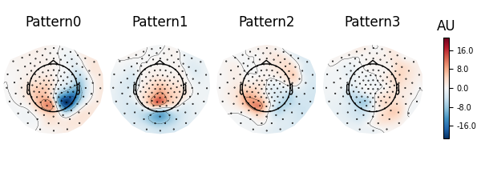

Note
Go to the end to download the full example code.
Compute spatial filters with Spatio-Spectral Decomposition (SSD)#
In this example, we will compute spatial filters for retaining oscillatory brain activity and down-weighting 1/f background signals as proposed by [1]. The idea is to learn spatial filters that separate oscillatory dynamics from surrounding non-oscillatory noise based on the covariance in the frequency band of interest and the noise covariance based on surrounding frequencies.
# Author: Denis A. Engemann <denis.engemann@gmail.com>
# Victoria Peterson <victoriapeterson09@gmail.com>
# License: BSD-3-Clause
# Copyright the MNE-Python contributors.
import matplotlib.pyplot as plt
import mne
from mne import Epochs
from mne.datasets.fieldtrip_cmc import data_path
from mne.decoding import SSD, get_spatial_filter_from_estimator
Define parameters
fname = data_path() / "SubjectCMC.ds"
# Prepare data
raw = mne.io.read_raw_ctf(fname)
raw.crop(tmin=50.0, tmax=110.0).load_data() # crop for memory purposes
raw.resample(sfreq=250)
raw.pick_types(meg=True, ref_meg=False)
freqs_sig = 9, 12
freqs_noise = 8, 13
ssd = SSD(
info=raw.info,
reg="oas",
sort_by_spectral_ratio=False, # False for purpose of example.
filt_params_signal=dict(
l_freq=freqs_sig[0],
h_freq=freqs_sig[1],
l_trans_bandwidth=1,
h_trans_bandwidth=1,
),
filt_params_noise=dict(
l_freq=freqs_noise[0],
h_freq=freqs_noise[1],
l_trans_bandwidth=1,
h_trans_bandwidth=1,
),
)
ssd.fit(X=raw.get_data())
ds directory : /home/circleci/mne_data/MNE-fieldtrip_cmc-data/SubjectCMC.ds
res4 data read.
hc data read.
Separate EEG position data file not present.
Quaternion matching (desired vs. transformed):
0.33 78.32 0.00 mm <-> 0.33 78.32 0.00 mm (orig : -71.62 40.46 -256.48 mm) diff = 0.000 mm
-0.33 -78.32 -0.00 mm <-> -0.33 -78.32 -0.00 mm (orig : 39.27 -70.16 -258.60 mm) diff = 0.000 mm
114.65 0.00 -0.00 mm <-> 114.65 0.00 -0.00 mm (orig : 64.35 66.64 -262.01 mm) diff = 0.000 mm
Coordinate transformations established.
Polhemus data for 3 HPI coils added
Device coordinate locations for 3 HPI coils added
Picked positions of 4 EEG channels from channel info
4 EEG locations added to Polhemus data.
Measurement info composed.
Finding samples for /home/circleci/mne_data/MNE-fieldtrip_cmc-data/SubjectCMC.ds/SubjectCMC.meg4:
System clock channel is available, checking which samples are valid.
75 x 12000 = 911610 samples from 191 chs
390 samples omitted at the end
Current compensation grade : 0
Reading 0 ... 72000 = 0.000 ... 60.000 secs...
Finding events on: STIM
29 events found on stim channel STIM
Event IDs: [ 196608 262144 327680 393216 458752 67108864 67174400
134742016 136314880 268435456]
Finding events on: STIM
29 events found on stim channel STIM
Event IDs: [ 196608 262144 327680 393216 458752 67108864 67174400
134742016 136314880 268435456]
NOTE: pick_types() is a legacy function. New code should use inst.pick(...).
Removing 5 compensators from info because not all compensation channels were picked.
Setting up band-pass filter from 9 - 12 Hz
FIR filter parameters
---------------------
Designing a one-pass, zero-phase, non-causal bandpass filter:
- Windowed time-domain design (firwin) method
- Hamming window with 0.0194 passband ripple and 53 dB stopband attenuation
- Lower passband edge: 9.00
- Lower transition bandwidth: 1.00 Hz (-6 dB cutoff frequency: 8.50 Hz)
- Upper passband edge: 12.00 Hz
- Upper transition bandwidth: 1.00 Hz (-6 dB cutoff frequency: 12.50 Hz)
- Filter length: 825 samples (3.300 s)
Setting up band-pass filter from 8 - 13 Hz
FIR filter parameters
---------------------
Designing a one-pass, zero-phase, non-causal bandpass filter:
- Windowed time-domain design (firwin) method
- Hamming window with 0.0194 passband ripple and 53 dB stopband attenuation
- Lower passband edge: 8.00
- Lower transition bandwidth: 1.00 Hz (-6 dB cutoff frequency: 7.50 Hz)
- Upper passband edge: 13.00 Hz
- Upper transition bandwidth: 1.00 Hz (-6 dB cutoff frequency: 13.50 Hz)
- Filter length: 825 samples (3.300 s)
Estimating covariance using OAS
Done.
Estimating covariance using OAS
Done.
Computing rank from covariance with rank=None
Using tolerance 1.2e-14 (2.2e-16 eps * 151 dim * 0.37 max singular value)
Estimated rank (mag): 151
MAG: rank 151 computed from 151 data channels with 0 projectors
Computing rank from covariance with rank=None
Using tolerance 2.9e-15 (2.2e-16 eps * 151 dim * 0.086 max singular value)
Estimated rank (mag): 151
MAG: rank 151 computed from 151 data channels with 0 projectors
Done.
Let’s investigate spatial filter with the max power ratio. We will first inspect the topographies. According to Nikulin et al. (2011), this is done by either inverting the filters (W^{-1}) or by multiplying the noise cov with the filters Eq. (22) (C_n W)^t. We rely on the inversion approach here.
spf = get_spatial_filter_from_estimator(ssd, info=ssd.info)
spf.plot_patterns(components=list(range(4)))
# The topographies suggest that we picked up a parietal alpha generator.
# Transform
ssd_sources = ssd.transform(X=raw.get_data())
# Get psd of SSD-filtered signals.
psd, freqs = mne.time_frequency.psd_array_welch(
ssd_sources, sfreq=raw.info["sfreq"], n_fft=4096
)
# Get spec_ratio information (already sorted)
# Note that this is not necessary if sort_by_spectral_ratio=True (default)
spec_ratio, sorter = ssd.get_spectral_ratio(ssd_sources)
# Plot spectral ratio (see Eq. 24 in Nikulin et al., 2011).
fig, ax = plt.subplots(1)
ax.plot(spec_ratio, color="black")
ax.plot(spec_ratio[sorter], color="orange", label="sorted eigenvalues")
ax.set_xlabel("Eigenvalue Index")
ax.set_ylabel(r"Spectral Ratio $\frac{P_f}{P_{sf}}$")
ax.legend()
ax.axhline(1, linestyle="--")
# We can see that the initial sorting based on the eigenvalues
# was already quite good. However, when using few components only
# the sorting might make a difference.
- 
Effective window size : 16.384 (s)
Effective window size : 1.000 (s)
Let’s also look at the power spectrum of that source and compare it to the power spectrum of the source with lowest SNR.
below50 = freqs < 50
# for highlighting the freq. band of interest
bandfilt = (freqs_sig[0] <= freqs) & (freqs <= freqs_sig[1])
fig, ax = plt.subplots(1)
ax.loglog(freqs[below50], psd[0, below50], label="max SNR")
ax.loglog(freqs[below50], psd[-1, below50], label="min SNR")
ax.loglog(freqs[below50], psd[:, below50].mean(axis=0), label="mean")
ax.fill_between(freqs[bandfilt], 0, 10000, color="green", alpha=0.15)
ax.set_xlabel("log(frequency)")
ax.set_ylabel("log(power)")
ax.legend()
# We can clearly see that the selected component enjoys an SNR that is
# way above the average power spectrum.
Epoched data#
Although we suggest using this method before epoching, there might be some situations in which data can only be treated by chunks.
# Build epochs as sliding windows over the continuous raw file.
events = mne.make_fixed_length_events(raw, id=1, duration=5.0, overlap=0.0)
# Epoch length is 5 seconds.
epochs = Epochs(raw, events, tmin=0.0, tmax=5, baseline=None, preload=True)
ssd_epochs = SSD(
info=epochs.info,
reg="oas",
filt_params_signal=dict(
l_freq=freqs_sig[0],
h_freq=freqs_sig[1],
l_trans_bandwidth=1,
h_trans_bandwidth=1,
),
filt_params_noise=dict(
l_freq=freqs_noise[0],
h_freq=freqs_noise[1],
l_trans_bandwidth=1,
h_trans_bandwidth=1,
),
)
ssd_epochs.fit(X=epochs.get_data(copy=False))
# Plot topographies.
spf = get_spatial_filter_from_estimator(ssd_epochs, info=ssd_epochs.info)
spf.plot_patterns(components=list(range(4)))
Not setting metadata
12 matching events found
No baseline correction applied
0 projection items activated
Using data from preloaded Raw for 12 events and 1251 original time points ...
1 bad epochs dropped
Setting up band-pass filter from 9 - 12 Hz
FIR filter parameters
---------------------
Designing a one-pass, zero-phase, non-causal bandpass filter:
- Windowed time-domain design (firwin) method
- Hamming window with 0.0194 passband ripple and 53 dB stopband attenuation
- Lower passband edge: 9.00
- Lower transition bandwidth: 1.00 Hz (-6 dB cutoff frequency: 8.50 Hz)
- Upper passband edge: 12.00 Hz
- Upper transition bandwidth: 1.00 Hz (-6 dB cutoff frequency: 12.50 Hz)
- Filter length: 825 samples (3.300 s)
Setting up band-pass filter from 8 - 13 Hz
FIR filter parameters
---------------------
Designing a one-pass, zero-phase, non-causal bandpass filter:
- Windowed time-domain design (firwin) method
- Hamming window with 0.0194 passband ripple and 53 dB stopband attenuation
- Lower passband edge: 8.00
- Lower transition bandwidth: 1.00 Hz (-6 dB cutoff frequency: 7.50 Hz)
- Upper passband edge: 13.00 Hz
- Upper transition bandwidth: 1.00 Hz (-6 dB cutoff frequency: 13.50 Hz)
- Filter length: 825 samples (3.300 s)
Estimating covariance using OAS
Done.
Estimating covariance using OAS
Done.
Computing rank from covariance with rank=None
Using tolerance 1.3e-14 (2.2e-16 eps * 151 dim * 0.38 max singular value)
Estimated rank (mag): 151
MAG: rank 151 computed from 151 data channels with 0 projectors
Computing rank from covariance with rank=None
Using tolerance 3e-15 (2.2e-16 eps * 151 dim * 0.09 max singular value)
Estimated rank (mag): 151
MAG: rank 151 computed from 151 data channels with 0 projectors
Effective window size : 1.000 (s)
Done.
References#
Total running time of the script: (0 minutes 4.790 seconds)